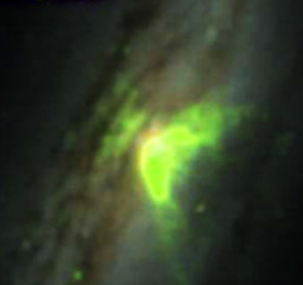
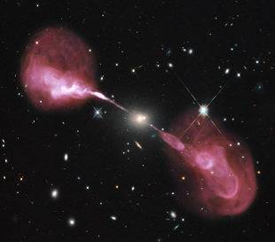
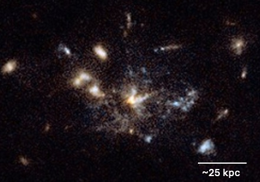
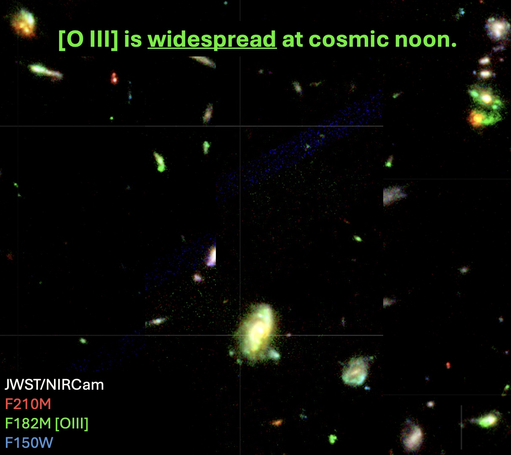
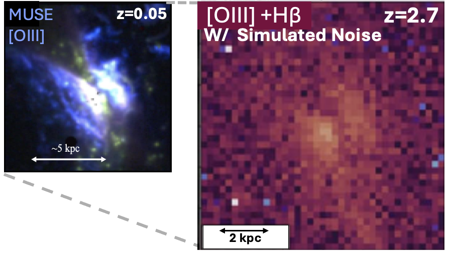
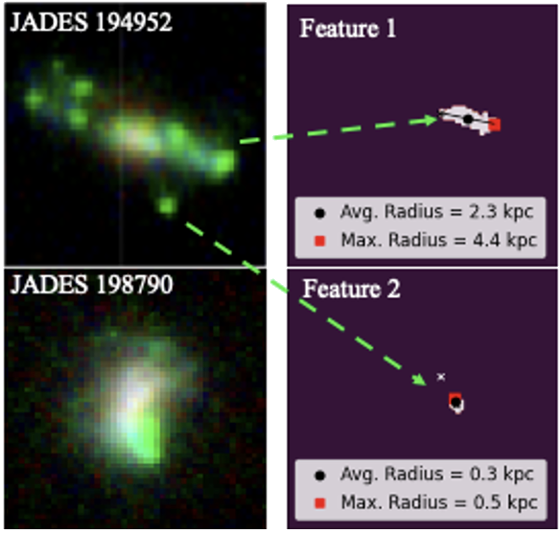

Black Holes and Galaxy Evolution
Nearly every massive galaxy hosts a supermassive black hole at its center. When these black holes actively accrete surrounding material, they become active galactic nuclei (AGN), releasing enormous amounts of energy that can impact their host galaxies and extend far beyond their visible boundaries.
This energy can take several forms. Radiation from the hot accretion disk surrounding the black hole can illuminate vast regions of gas, sometimes producing giant structures known as ionization cones. In other cases, AGN launch powerful, relativistic jets that extend far beyond the visible galaxy, known as radio jets. These different forms of black hole activity can heat or expel the gas needed to form new stars, potentially shutting down star formation. Under certain conditions, however, they may also trigger the formation of new stars.
My research focuses on understanding this energetic connection between AGN and their host galaxies during cosmic noon, a period roughly 10–11 billion years ago when galaxies were rapidly forming stars and their central black holes were growing most actively. By combining observations across the electromagnetic spectrum, I investigate how black hole activity shapes the multiphase gas reservoirs within and surrounding galaxies to uncover the role of AGN in driving galaxy evolution.


High-Redshift Radio Galaxies: Laboratories for Galaxy Evolution
High-redshift radio galaxies are powerful laboratories for studying the formation and evolution of today's most massive galaxies. These systems host powerful radio jets and are often found in dense environments containing numerous interacting and merging galaxies, abundant reservoirs of gas, and intense star formation.
The Spiderweb Galaxy
The Spiderweb Galaxy (z ≈ 2.2), corresponding to roughly 3 billion years after the Big Bang, is a particularly fascinating example. Previous observations with the Hubble Space Telescope and ALMA have revealed evidence of in situ star formation within the extended reservoir of gas surrounding the central galaxy and its satellites, known as the circumgalactic medium (CGM). In my current research at NRAO, I combine observations from the Mid-Infrared Instrument (MIRI) aboard the James Webb Space Telescope (JWST) with ALMA observations to investigate whether warm molecular hydrogen (H₂) provides a dominant cooling channel for the CGM by radiating away mechanical energy, and how this process may be connected to powerful radio jets and in situ star formation.

Mapping AGN Ionization at Cosmic Noon
Much of what we know about how supermassive black holes affect their host galaxies at cosmic noon comes from studies of rare, extremely luminous AGN known as quasars. During my Ph.D., I shifted the focus to the more numerous, moderate-luminosity AGN to investigate how these more typical black holes influence the gas in their host galaxies. Their intense radiation can illuminate vast regions of gas, producing extended [O III] emission that sometimes forms striking ionization cones, but can also take on a variety of other shapes.
The James Webb Space Telescope (JWST) has opened a new window into this population, revealing extended [O III] structures (shown in green) across galaxies at cosmic noon. These structures provide a distinct spatial fingerprint of how supermassive black holes interact with their surroundings, opening new opportunities to investigate AGN ionization across large samples of distant galaxies.

Simulations

I set out to search for ionization cones and measure how far AGN radiation reaches into their host galaxies. However, at such great distances, even large structures can be difficult to detect. I first developed simulations of how nearby ionization cones would appear in JWST observations of the distant universe, revealing how cosmological dimming and instrumental noise can cause us to underestimate their true sizes.
Related publication: Lebowitz et al. (2025), The Astrophysical Journal
Observations
Building on these simulations, I developed techniques to map [O III] emission using JWST's Near-Infrared Camera (NIRCam). Expanding this work to a sample of approximately 200 galaxies, I uncovered a striking diversity of ionized gas structures and found that AGN hosts exhibit systematically more extended emission than galaxies without identified AGN. I also established the first constraints on the relationship between AGN luminosity and the size of their ionized regions at z ≈ 3. These findings demonstrate that even moderate-luminosity AGN can contribute substantially to galaxy-wide ionization at cosmic noon, motivating my ongoing research into how this activity relates to radio jets, molecular gas, and galactic outflows.
Related work: Lebowitz et al. (2026), published
